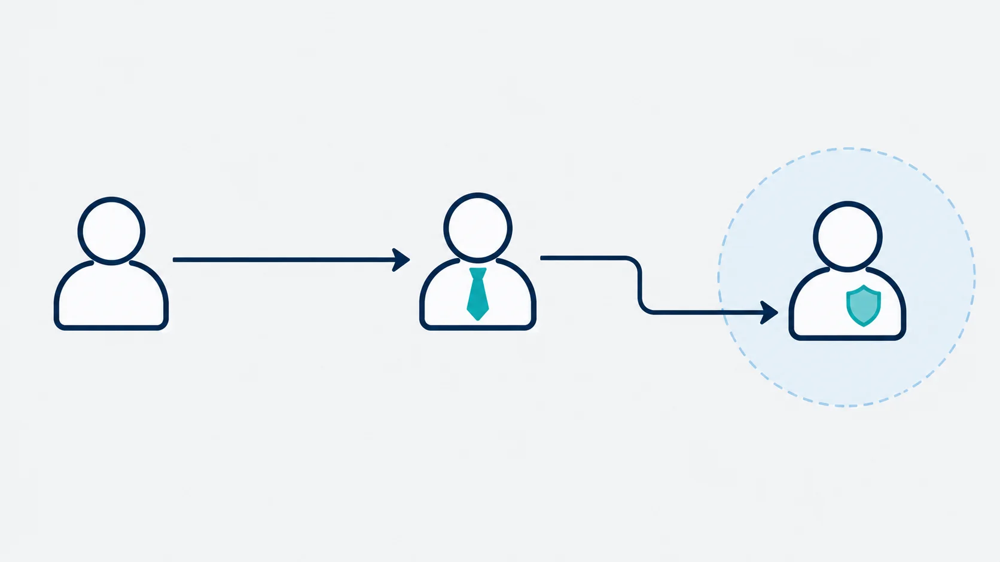

Article · 飞函
Article · 飞函
集团通讯录该对谁开放？权限边界怎么定
项目交付临近，分公司的实施经理需要联系总部财务确认付款材料。如果通讯录只能看到本部门，他可能要逐级打听；如果全集团员工都能看到每个人的完整资料，财务、审计等敏感岗位又可能收到与工作无关的联系。
集团通讯录的权限问题，不能只用“开放”或“隐藏”回答。更实用的起点是问清楚：谁因什么工作需要找到谁，找到后需要看到哪些信息？
先区分“找得到”和“看得全”
跨部门协作通常需要一个可靠的联系入口，但不一定需要公开个人手机号、完整组织关系和所有岗位资料。集团可以按工作场景梳理可见范围：同部门成员便于直接查找；经常协作的部门之间保留必要的联系入口；敏感岗位则由业务窗口或指定负责人承接一般咨询。
这样设计时，也要给确有需要的人留出路径。例如，分公司财务需要对接总部付款审核，可以看到对应的工作联系人；普通项目成员只需知道该向哪个岗位或部门发起请求。权限边界越清楚，员工越少依赖私下转发号码和反复打听。

把例外申请和岗位变动一起考虑
权限表上线当天合理，不代表半年后仍然合理。员工调岗、项目结束、部门合并，都可能改变找人的需要。制定规则时，建议同时写明三个动作：谁批准跨范围查看，申请到期后谁回收权限，组织架构调整后谁复核联系人。
还应检查实际体验：搜索不到人时，员工是否知道下一步找谁？如果没有替代入口，过严的限制可能把协作推回私人通讯工具。可以先选取几个高频跨部门流程试行，再根据找人耗时、错误联系和例外申请情况调整范围。
让工具承接已经说清的规则
飞函提供组织通讯录，并在官方产品资料中列有通讯录可见范围及按部门、角色、人员分配权限的能力。集团可以据此评估，将“哪些岗位能看到哪些联系人”的规则落实到实际配置中。具体可配置范围与操作方式，应结合所用版本和部署环境核对。
通讯录治理的目标，是让员工在需要协作时找到正确的人，同时让敏感岗位只暴露完成工作所必需的联系信息。先明确业务路径，再配置权限，并随岗位变化持续复核，才能让效率与保护都落到日常工作里。